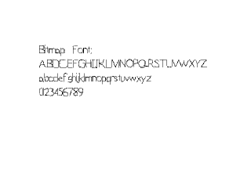
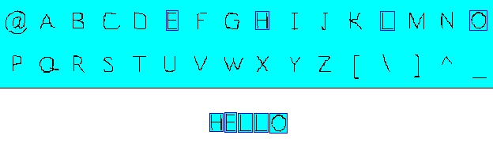
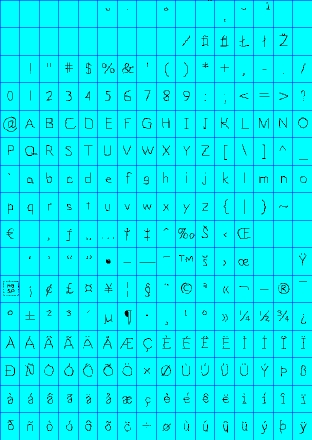
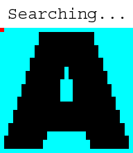

好的字体程序可能很昂贵，有些字体API（例如SDL_ttf）并不是那么灵活。与其花费大量时间在这上面，不如自己做一个位图字体引擎。这节课将教你创建一个常见类型的位图字体。
一个位图字体就是个精灵图。
如果我们想要在屏幕上显示"HELLO"，我们需要这么做；
既然你已经了解了基本概念，是时候动手建立一个位图字体引擎了。
如果我们想要在屏幕上显示"HELLO"，我们需要这么做；

我们将取出"H"子图，"E"子图，两个"L"子图，以及最后的一个"O"子图，然后在屏幕上一个接一个地显示它们。
既然你已经了解了基本概念，是时候动手建立一个位图字体引擎了。
//我们的位图字体
class BitmapFont
{
private:
//字体表面
SDL_Surface *bitmap;
//表面中独立的字符
SDL_Rect chars[ 256 ];
//空白变量
int newLine, space;
public:
//默认构造函数
BitmapFont();
//当已有表面时直接生成字体
BitmapFont( SDL_Surface *surface );
//生成字体
void build_font( SDL_Surface *surface );
//显示文字
void show_text( int x, int y, std::string text, SDL_Surface *surface );
};
这里是我们的位图字体类。
我们拥有的第一个东西是位图字体的表面。然后我们必须有一个矩阵数组来从位图字体中剪切出字母来。我们剪切出256个，每个都是扩展的ASCII字符。我们还有两个整数"newLine"和"space"，它们决定着文本中行间距和单词间距。
然后我们有构造函数。我们还有个
我们拥有的第一个东西是位图字体的表面。然后我们必须有一个矩阵数组来从位图字体中剪切出字母来。我们剪切出256个，每个都是扩展的ASCII字符。我们还有两个整数"newLine"和"space"，它们决定着文本中行间距和单词间距。
然后我们有构造函数。我们还有个
build_font()来初始化字体。最后，我们有show_text()函数，用于在屏幕上显示文字。
Uint32 get_pixel32( int x, int y, SDL_Surface *surface )
{
//转换像素为32位
Uint32 *pixels = (Uint32 *)surface->pixels;
//获取请求的像素
return pixels[ ( y * surface->w ) + x ];
}
首先，我们需要创建一个函数来从表面中取得一个单独的像素。为何SDL没有提供一个这样的API呢？这我就不清楚了。
我们做的第一件事就是将像素指针的类型从void转换成32位整数指针，这样我们才能正确地访问它们。毕竟一个表面的像素仅仅是一个32位整数的数组。随后，我们就能获取或设置请求的像素了。
你可能想知道为何我不直接用"return pixels[ x ][ y ]"。
原因是，像素不是像这样存储的：

它们是像这样存储的：
 以一维数组的方式存储的。因为不同操作系统以不同的方式存储二维数组（至少我认为这是原因）。
以一维数组的方式存储的。因为不同操作系统以不同的方式存储二维数组（至少我认为这是原因）。
所以为了从数组中提取红色的像素信息，我们用y坐标乘以宽度再加上x坐标。
这些函数只在32位表面上起作用。如果你在使用一个不同格式的表面，你需要自己实现这样的函数。
我们做的第一件事就是将像素指针的类型从void转换成32位整数指针，这样我们才能正确地访问它们。毕竟一个表面的像素仅仅是一个32位整数的数组。随后，我们就能获取或设置请求的像素了。
你可能想知道为何我不直接用"return pixels[ x ][ y ]"。
原因是，像素不是像这样存储的：
它们是像这样存储的：
所以为了从数组中提取红色的像素信息，我们用y坐标乘以宽度再加上x坐标。
这些函数只在32位表面上起作用。如果你在使用一个不同格式的表面，你需要自己实现这样的函数。
BitmapFont::BitmapFont()
{
//初始化变量
bitmap = NULL;
newLine = 0;
space = 0;
}
BitmapFont::BitmapFont( SDL_Surface *surface )
{
//建立字体
build_font( surface );
}
这是我们的构造函数。
其中第一个简单地初始化我们的变量为0。第二个创建对象并用给定的变量来构建字体。
其中第一个简单地初始化我们的变量为0。第二个创建对象并用给定的变量来构建字体。
void BitmapFont::build_font( SDL_Surface *surface )
{
//如果表面是NULL
if( surface == NULL )
{
return;
}
//获取位图
bitmap = surface;
//设置背景颜色
Uint32 bgColor = SDL_MapRGB( bitmap->format, 0, 0xFF, 0xFF );
现在是时候构建我们的字体了。不过我们必须先检查一下给我们的表面是否合法。
然后我们从给定的参数中获得真正的位图字体表面。接着我们设置背景颜色。
然后我们从给定的参数中获得真正的位图字体表面。接着我们设置背景颜色。
//设置单元大小
int cellW = bitmap->w / 16;
int cellH = bitmap->h / 16;
//新行变量
int top = cellH;
int baseA = cellH;
这里我们计算单元的宽高。单元是什么？单元是用来在位图上安排字母的位置的，它能让获取单独的字符更加简单。
一个常见的位图字体有256个按ASCII排序的字符。每个字母都在一个统一大小的单元中，并且布局成16行16列。它看上去就像这样：
变量"top" 和 "baseA"是用来计算行间间距的。你将会看到我们是如何使用它们的。
既然我们已经获得了我们的位图并设置好了单元，下面该剪切出每个单独的字母了。
一个常见的位图字体有256个按ASCII排序的字符。每个字母都在一个统一大小的单元中，并且布局成16行16列。它看上去就像这样：

图中划分单元的线条不必在那里，它们仅仅是用来向你展示单元是什么样的。要计算单元的宽度，由于有16个等宽的列，只需将图像宽度除以16。计算高度采用的是一样的方法。
变量"top" 和 "baseA"是用来计算行间间距的。你将会看到我们是如何使用它们的。
既然我们已经获得了我们的位图并设置好了单元，下面该剪切出每个单独的字母了。
//我们正在设置的当前字符
int currentChar = 0;
//遍历单元行
for( int rows = 0; rows < 16; rows++ )
{
//遍历单元列
for( int cols = 0; cols < 16; cols++ )
{
首先，我们创建一个整数用于跟踪我们正在设置的字符。然后，我们遍历单元行，接着遍历每个单独的列。
译者注：这里翻译得好怪...反正代码都能看懂，就不折腾了...
//设置字符坐标
chars[ currentChar ].x = cellW * cols;
chars[ currentChar ].y = cellH * rows;
//设置字符大小
chars[ currentChar ].w = cellW;
chars[ currentChar ].h = cellH;
随后，我们将当前字符的默认坐标和大小设为单元的坐标和大小。特定的ASCII值没有字符与之对应，所以默认值从不会改变。
但是，大多数字符不会都有相同的X坐标和宽度。所以我们遍历每个单元来设置每个字符唯一的剪切矩形。
但是，大多数字符不会都有相同的X坐标和宽度。所以我们遍历每个单元来设置每个字符唯一的剪切矩形。
//寻找左边界
//遍历像素列
for( int pCol = 0; pCol < cellW; pCol++ )
{
//遍历像素行
for( int pRow = 0; pRow < cellH; pRow++ )
{
//获得像素坐标
int pX = ( cellW * cols ) + pCol;
int pY = ( cellH * rows ) + pRow;
现在我们遍历单元中的像素。注意我们嵌套的for循环是如何构造的。我们先遍历每一列，然后我们从顶部到底部遍历列中的每一行。
我们通过将相对像素坐标和单元坐标相加来计算字符坐标。
我们通过将相对像素坐标和单元坐标相加来计算字符坐标。
//如果找到一个非关键色的像素
if( get_pixel32( pX, pY, bitmap ) != bgColor )
{
//设置X坐标
chars[ currentChar ].x = pX;
//跳出循环
pCol = cellW;
pRow = cellH;
}
}
}
当我们在单元中遍历像素时，我们寻找一个非背景色的像素，就像这样：

当一个非背景色像素被找到，这意味着我们找到了这个字符的X坐标。我们设置了这个子图的X像素，然后草草中断了循环。
//寻找右边界
//遍历像素列
for( int pCol_w = cellW - 1; pCol_w >= 0; pCol_w-- )
{
//遍历像素行
for( int pRow_w = 0; pRow_w < cellH; pRow_w++ )
{
//获取像素坐标
int pX = ( cellW * cols ) + pCol_w;
int pY = ( cellH * rows ) + pRow_w;
//如果一个非关键色像素被找到
if( get_pixel32( pX, pY, bitmap ) != bgColor )
{
//设置宽度
chars[ currentChar ].w = ( pX - chars[ currentChar ].x ) + 1;
//跳出循环
pCol_w = -1;
pRow_w = cellH;
}
}
}
然后我们做基本相同的事情，来得到宽度值。只是这次我们从右边开始并向左移动。当我们找到字符的一个像素时，宽度就可以由我们找到的像素的X坐标减去字符的X坐标，并加上1来计算出来。
//找到上边界
//遍历像素行
for( int pRow = 0; pRow < cellH; pRow++ )
{
//遍历像素列
for( int pCol = 0; pCol < cellW; pCol++ )
{
//获得像素坐标
int pX = ( cellW * cols ) + pCol;
int pY = ( cellH * rows ) + pRow;
//如果一个非关键色像素被找到
if( get_pixel32( pX, pY, bitmap ) != bgColor )
{
//如果新的上边界被找到
if( pRow < top )
{
top = pRow;
}
//跳出循环
pCol = cellW;
pRow = cellH;
}
}
}
这里我们扫描单元像素的方向不是像之前的一样，而是从上往下扫描。我们努力寻找的是我们的位图字体中最高的字符。
我们使用"pRow"变量，因为我们需要相对单元的坐标。"pY"是相对于位图表面的坐标。
我们使用"pRow"变量，因为我们需要相对单元的坐标。"pY"是相对于位图表面的坐标。
//寻找A的下边界
if( currentChar == 'A' )
{
//遍历像素行
for( int pRow = cellH - 1; pRow >= 0; pRow-- )
{
//遍历像素列
for( int pCol = 0; pCol < cellW; pCol++ )
{
//获得像素坐标
int pX = ( cellW * cols ) + pCol;
int pY = ( cellH * rows ) + pRow;
//如果一个非关键色像素被找到
if( get_pixel32( pX, pY, bitmap ) != bgColor )
{
//A的下边界被找到
baseA = pRow;
//跳出循环
pCol = cellW;
pRow = -1;
}
}
}
}
//运行到下一个字符
currentChar++;
}
}
如果当前我们扫描的单元属于大写的A，我们将要寻找A相对于单元的下边界。我们将要将它作为我们的基线。特定的字符，例如g,j和y，都有基线以下的字符图像。你将在后面看到我们如何使用基线。
当我们设置好当前字符，我们增加了计数器的值来继续进行下一个字符的处理。
记着，为了让这个函数正常工作，位图字体必须有256个按ASCII顺序排列的字符，并且以16行16列布局。其他任何形式的位图文件都需要你自己实现构建函数。
当我们设置好当前字符，我们增加了计数器的值来继续进行下一个字符的处理。
记着，为了让这个函数正常工作，位图字体必须有256个按ASCII顺序排列的字符，并且以16行16列布局。其他任何形式的位图文件都需要你自己实现构建函数。
//计算空白符宽度
space = cellW / 2;
//计算新行高度
newLine = baseA - top;
//砍掉多余的顶部像素
for( int t = 0; t < 256; t++ )
{
chars[ t ].y += top;
chars[ t ].h -= top;
}
}
我们遍历完所有单元后，我们做了一些额外工作来正确地处理文字间的空白。
我们设置空白符为单元宽度的一半。"newLine"是文本行之间的距离。它通过基线减去已知最高字符的高度进行设定。
我们设置空白符为单元宽度的一半。"newLine"是文本行之间的距离。它通过基线减去已知最高字符的高度进行设定。
译者注：为了翻译方便，这里的空白符特指Space，即' ' 。
在字体加载函数的最后，我们遍历字符剪切矩形并切掉顶部多余的像素。
void BitmapFont::show_text( int x, int y, std::string text, SDL_Surface *surface )
{
//临时坐标
int X = x, Y = y;
现在这是真正地显示文本的函数。
我们做的第一件事就是获取给定的坐标并将它们保存在临时的坐标中。参数中给定的坐标被当作基线坐标，临时坐标是下一个子图将被blit的地方。
我们做的第一件事就是获取给定的坐标并将它们保存在临时的坐标中。参数中给定的坐标被当作基线坐标，临时坐标是下一个子图将被blit的地方。
//如果字体已经构建好
if( bitmap != NULL )
{
//遍历文本
for( int show = 0; text[ show ] != '\0'; show++ )
{
然后我们检查我们是否有位图可用。如果有，我们就遍历字符串中的字符。
//如果当前字符是空白符
if( text[ show ] == ' ' )
{
//向前移动
X += space;
}
//If the current character is a newline
else if( text[ show ] == '\n' )
{
//向下移动
Y += newLine;
//移回原位
X = x;
}
这里我们首先检查当前字符是否为空白符或换行符。
如果是空白符，我们向前移动
如果是空白符，我们向前移动
build_font()函数中设定的space那么大的空间；如果是换行符，临时坐标会向下移动一个单元的高度，并且然后将X坐标移回初始位置。
译者注：这里说是向下移动一个单元的高度(原文：goes down the cell height)，可代码中明明写的是
Y += newLine，并且newLine = baseA - top，这结果不一致啊！高度疑惑中... else
{
//获取字符的ASCII值
int ascii = (unsigned char)text[ show ];
//显示字符
apply_surface( X, Y, bitmap, surface, &chars[ ascii ] );
//向前移动当前字符的宽度，并加上一像素的内边距
X += chars[ ascii ].w + 1;
}
}
}
}
如果当前字符不是空白符或换行符，我们将该字符的子图应用到屏幕上。
为了显示这个字符，我们必须先将其转换成整型以获取其ASCII值。然后我们将它的子图应用到屏幕上。由于子图都是按照ASCII顺序排列的，所以这一步很容易。
接着，临时坐标向前移动了当前子图宽度+1的距离。这样，下一个子图将被应用到上一个子图旁边的位置，并在中间保留了一像素的内边距。
我们一直执行循环，直到所有字符都显示了出来。
为了显示这个字符，我们必须先将其转换成整型以获取其ASCII值。然后我们将它的子图应用到屏幕上。由于子图都是按照ASCII顺序排列的，所以这一步很容易。
接着，临时坐标向前移动了当前子图宽度+1的距离。这样，下一个子图将被应用到上一个子图旁边的位置，并在中间保留了一像素的内边距。
我们一直执行循环，直到所有字符都显示了出来。
//创建我们的字体
BitmapFont font( bitmapFont );
//用白色填充屏幕
SDL_FillRect( screen, screen->clip_rect, SDL_MapRGB( screen->format, 0xFF, 0xFF, 0xFF ) );
//显示文本
font.show_text( 100, 100, "Bitmap Font:\nABDCEFGHIJKLMNOPQRSTUVWXYZ\nabcdefghijklmnopqrstuvwxyz\n0123456789", screen );
//更新屏幕
if( SDL_Flip( screen ) == -1 )
{
return 1;
}
这是
我们所做的就是创建一个字体对象，把屏幕填充成白色，应用一些文本，并更新屏幕。
main()函数中，有关我们的位图类的一个基本演示。
我们所做的就是创建一个字体对象，把屏幕填充成白色，应用一些文本，并更新屏幕。